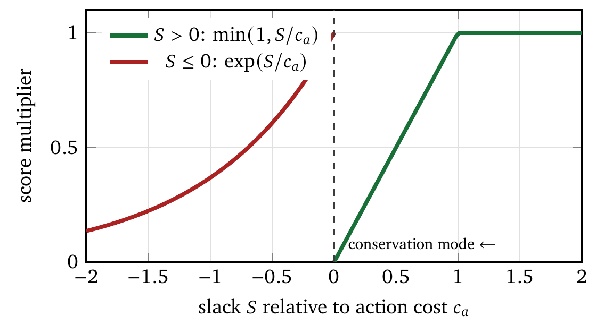
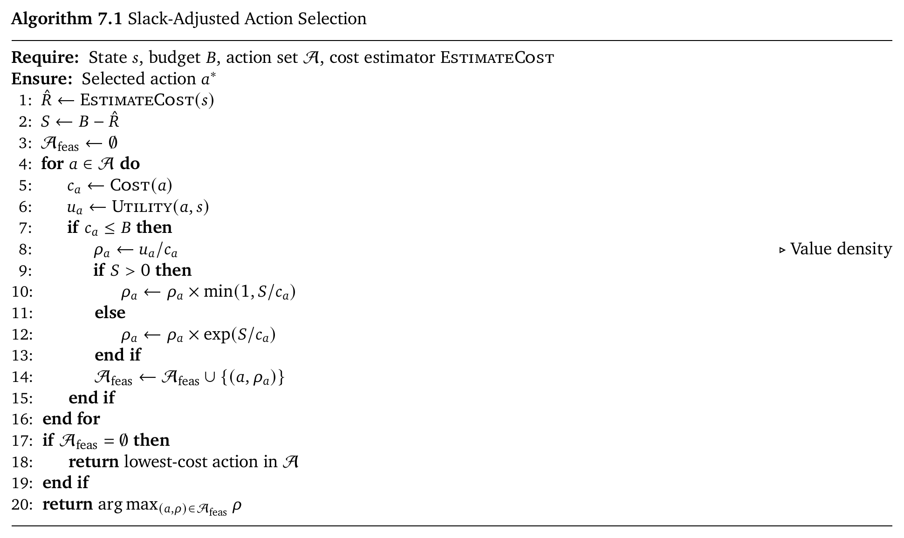
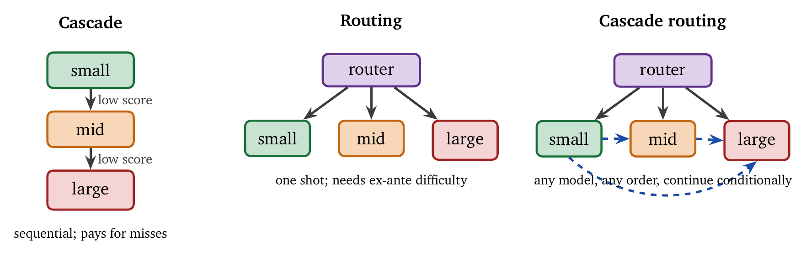
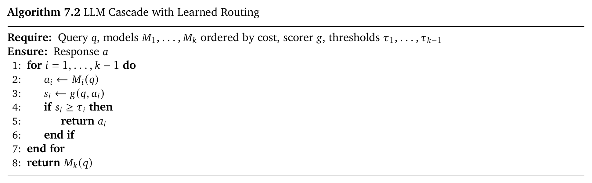
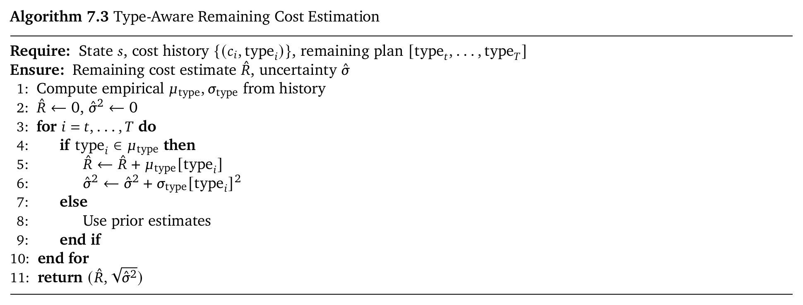
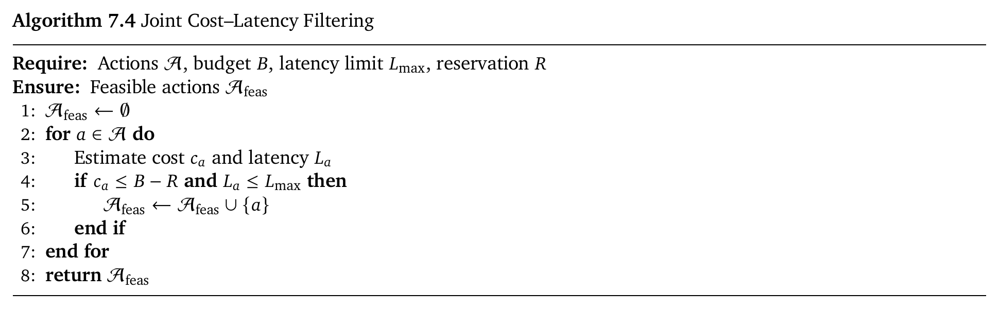
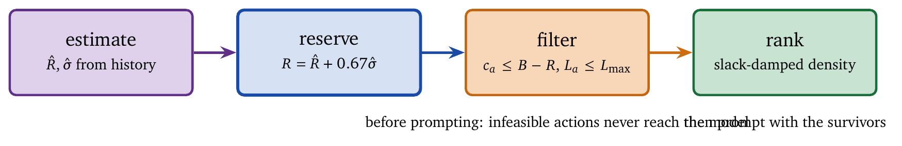
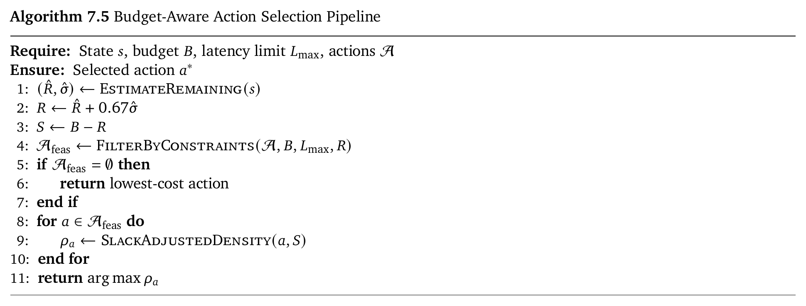

The cheapest possible agent takes no actions. It never overspends, never violates an invariant, never fabricates a citation, and never helps anyone. This is worth stating at the outset because cost-reduction work drifts toward it. Every optimization in Chapter 5 pushes in the direction of doing less, and taken to its limit that direction ends in an agent that returns “I was unable to complete this task” very economically. The problem this chapter addresses is allocation: given \(B_t\) dollars and a set of candidate actions, which ones buy the most progress while leaving enough to finish?
Everything here follows from treating the budget as a state variable the policy reads, rather than as a ceiling it discovers by hitting. That single change couples present decisions to future feasibility, and the coupling is what makes the problem interesting and what makes greedy selection fail.
At each step \(t\) an agent observes the current state \(s_t\), holds a remaining budget \(B_t\), and selects an action \(a_t\) from a candidate set \(\mathcal{A}_t\). Actions may be model invocations, tool calls, search operations, verification steps, or synthesis phases, depending on the architecture.
Without constraints, action selection is a familiar optimization: choose the action of maximum expected utility, \[a^*_t = \arg\max_{a \in \mathcal{A}_t} \mathbb{E}[U(a) \mid s_t],\] where \(U(a)\) stands for task-specific progress, such as correctness, information gain, or reduction in uncertainty.
Under a budget this formulation is incomplete. A locally optimal action may render future mandatory steps infeasible. To account for this we introduce a reservation term \(R_t\), the resources explicitly set aside for unavoidable future actions such as final synthesis or verification. The constrained objective becomes \[a^*_t = \arg\max_{a \in \mathcal{A}_t} \mathbb{E}[U(a) \mid s_t] \quad \text{s.t.} \quad c(a) \leq B_t - R_t.\] The constraint creates a dependency across time. Current actions consume budget that future actions may require, and the decision at step \(t\) cannot be evaluated in isolation.
Pricing constraints. The trade-offs have a specific shape set by how models are priced. Flagship models cost \(10\times\)–\(100\times\) lightweight ones, and output tokens cost \(2\times\)–\(5\times\) input tokens. Both ratios track the underlying compute, which is why they survive every round of price cuts even as absolute numbers fall. The consequence is that the same action can differ in price by two orders of magnitude depending on which model serves it. An agent that ignores this will spend flagship money on a formatting step and then be unable to afford the synthesis that mattered.
A natural baseline is greedy selection: at each step, choose the action with the highest immediate expected utility. This ignores future costs, and empirically it performs poorly.
Kapoor et al. [7] showed that greedy selection produces highly inefficient cost–accuracy trade-offs. On HumanEval, agents with similar accuracy differed in cost by nearly two orders of magnitude. A baseline agent achieved about 67% accuracy at cost \(c\); a debugging agent (LDB) achieved 76% at cost \(14c\); a jointly optimized agent achieved 74% at cost \(2c\). The greedy strategy corresponds to the LDB configuration: higher immediate utility per step and uncontrolled expenditure. Budget-aware strategies recover most of the accuracy gain (97% of LDB’s performance) at a fraction of the cost (14%).
The failure generalizes beyond code. Liu et al. [8] showed that increasing tool-call budgets does not improve performance for standard agents. Without explicit budget awareness, agents reach a performance ceiling early and then spend the remaining resources on unproductive exploration. Their Budget Tracker module reduced search and browse calls by 20–40% while maintaining accuracy, purely by making resource usage visible at decision time.
The underlying issue is temporal myopia. Greedy selection optimizes the current step while the constraint binds across the trajectory. An agent that spends aggressively early cannot afford the steps that close the task, and those closing steps are usually mandatory, which is why the failure is total rather than graceful.
Formally, budget-aware action selection is an instance of a constrained Markov decision process (CMDP). A policy \(\pi\) maps states and budgets to actions, and the objective is to maximize cumulative utility subject to a global budget constraint: \[\max_\pi \mathbb{E}\left[\sum_{t=1}^{T} U(a_t, s_t)\right] \quad \text{s.t.} \quad \sum_{t=1}^{T} c(a_t) \leq B_0.\]
CMDPs differ from standard MDPs in that feasibility depends on the entire trajectory rather than on local rewards alone. Altman [1] showed that such problems can be solved by Lagrangian relaxation: the constrained objective is converted into an unconstrained one by introducing a multiplier \(\lambda\), \[\mathcal{L}(\pi, \lambda) = \mathbb{E}\left[\sum_{t=1}^{T} U(a_t, s_t) - \lambda \cdot c(a_t)\right] + \lambda B_0.\] The multiplier is the shadow price of the budget; intuitively it converts cost into negative reward. When \(\lambda\) is large, cost is expensive and the agent should favor cheap actions even if they are less informative. When \(\lambda\) is small, the agent can afford to spend for higher-quality outcomes. The optimal \(\lambda\) balances the two so that expected total cost matches the available budget.
Recent systems operationalize this idea. Damani et al. [3] use Inference Budget Policy Optimization to adapt reasoning-trace length to input difficulty, allocating more computation only when it yields sufficient benefit. Chen et al. [2] avoid explicit multipliers by learning scoring functions that predict whether a cheaper model is sufficient, implicitly approximating the Lagrangian trade-off.
In practice, computing \(\lambda\) exactly is expensive and unstable. The remainder of the chapter develops approximations that are simple, interpretable, and effective in real systems.
The Lagrangian formulation is principled and is not directly usable at runtime. Computing or adapting \(\lambda\) requires solving a dual optimization problem or learning a policy over long horizons, and both are expensive and brittle.
We instead approximate the Lagrangian trade-off with a simpler quantity, slack, which measures how much budget remains after accounting for the expected cost of finishing the task. Let \(\hat{R}_t\) be the estimated cost of completing the task from state \(s_t\). The slack at time \(t\) is \[\Delta_t = B_t - \hat{R}_t.\] Slack has a direct operational reading. When \(\Delta_t\) is large and positive, the agent has surplus resources and can afford expensive, high-quality actions. When \(\Delta_t\) is small or negative, the agent is at risk of exhausting its budget before completion and must act conservatively. The approximation replaces an abstract shadow price with a concrete, state-dependent signal that can be computed cheaply. Figure 7.1 shows how the score of an action is damped as slack falls.


The algorithm estimates the remaining cost and computes the slack. Actions are scored by value density, the ratio of expected utility to cost, which favors actions that produce more progress per unit spent. Slack then modifies the score. With positive slack, expensive actions are dampened in proportion to how much of the surplus they consume. With negative slack, an exponential penalty sharply reduces the score of costly actions, which produces a regime shift: once the agent is over budget in expectation, it enters a conservation mode in which only low-cost actions remain viable. This approximates the effect of a large Lagrange multiplier without computing one.
Budget-aware selection matters most when the actions are model invocations. Modern systems offer families of models with sharply different cost and capability profiles, and using the strongest model everywhere is rarely optimal. Dekoninck et al. [4] distinguish three architectures for cost-aware model use, shown in Figure 7.2: cascading, routing, and cascade routing.

In a cascade, queries pass through a sequence of models ordered by increasing cost, and execution stops as soon as a response is judged sufficient. Let \(p_i\) be the probability that model \(M_i\) produces an acceptable response given that all earlier models failed. The expected cost is \[\mathbb{E}[C] = c_1 + (1-p_1)c_2 + (1-p_1)(1-p_2)c_3 + \cdots\] Chen et al. [2] showed that cascading pays when the cheap model succeeds often enough to justify its inclusion, specifically when \(p_1 > c_1 / c_2\). With typical \(10\times\) cost ratios, even modest success rates on the cheap model yield substantial savings.

The scoring function \(g(q, a)\) estimates response quality without ground truth. It is far cheaper than the models in the cascade, so the decision cost is negligible.
Routing selects a single model up front from the predicted difficulty of the query. Ong et al. [10] trained routers on preference data from Chatbot Arena, learning to predict which model would win for a given prompt. Routing avoids the sequential latency of cascades and requires accurate ex-ante difficulty estimation, which is harder than post-hoc verification because the model must be chosen before any output is observed.
Cascade routing [4] unifies the two. Instead of committing to a single path, the agent may route to any model at each step and continue conditionally, which allows non-monotonic progression across tiers. Empirically, cascade routing improves performance by 4% on RouterBench and 14% on SWE-bench. The gain comes from flexibility: early decisions need not determine later options.
The three architectures above share an assumption that has since been challenged: the routing decision happens once, per query. For a single-turn question that is natural. For an agent running a twenty-step trajectory it is a considerable simplification, because difficulty is a property of the step rather than of the task. Locating a file is easy. Reasoning about the concurrency bug inside it is hard. Formatting the patch is easy again.
Recent work routes at each step. Intermediate reasoning states are assigned to models by predicted difficulty as the trajectory unfolds, so a single task is served by several tiers [16, 15]. The reported savings are substantial, and the reason is structural: within-task difficulty variance is large, and per-query routing has to price the whole trajectory at the rate of its hardest step.
The cost of stepwise routing is that the decision is made \(T\) times rather than once, so the router itself must be very cheap, and routing errors compound across steps in a way that a single mis-route does not.
All of this machinery rests on a quantity so far taken for granted: the score \(g(q,a)\), or the predicted difficulty, that decides whether to escalate.
A router’s threshold is only meaningful if its confidence scores mean what they claim. A model reporting 0.9 confidence should be right about 90% of the time. Deployed routers largely use uncalibrated scores and per-workload hand-tuned thresholds, which is why they need retuning whenever the traffic shifts [18]. Calibrating the uncertainty first, then deriving the escalation threshold from cost, removes the tuning step and transfers across workloads.
This is the same problem that Chapter 9 treats under abstention, approached from the opposite direction. A cascade’s “escalate to the expensive model” and a gate’s “abstain and ask a human” are the same decision with different fallbacks, and both derive from calibrated confidence and asymmetric costs. A team that has built one has most of the other.
There is a further complication for agents. Confidence about a token is not confidence about an action, and evidence suggests agents are poor at recognizing when they should not act at all [11]. A router that escalates well can still be attached to an agent that should have stopped.
Escalation is binary in the classical cascade: the cheap model either suffices or it does not. On genuinely ambiguous queries this triggers escalation that the expensive model then resolves in a way the cheap one could have, given a second opinion. Running short deliberation among several cheap models at a tier, before escalating, resolves part of that ambiguity at tier-one prices [13]. The technique buys most on workloads where ambiguity rather than difficulty drives escalation.
Routing and cascading sit at opposite ends of a trajectory. A router decides before reasoning begins; a verifier decides after a response is complete. Recent work identifies a third regime that neither covers, in which an agent recognizes mid-reasoning that it is unlikely to succeed and transfers control to a stronger model [20].
The formulation is an optimal-stopping problem over a learned competence posterior, an online estimate of eventual success. The important detail is the source of that estimate: its sufficient statistics are learned from labelled trajectories rather than read off raw entropy, which addresses the calibration failure described above and the negative result on entropy-based selection in Chapter 9. A myopic escalation threshold follows in closed form, with the full policy characterized by dynamic programming.
The practical significance is in what gets abandoned. Per-query routing pays frontier prices for an entire trajectory because of a difficulty it predicted at step zero. Post-hoc verification pays for a complete wrong answer before deciding to pay again. Escalating mid-reasoning abandons only the prefix, which is the cheapest of the three failure modes.
A different lever reduces the number of decisions rather than their cost. ReAct-style protocols issue one primitive action per model round, which enables frequent replanning and spends many rounds on routine sequences that were never in doubt. Emitting variable-length action chunks amortizes the reasoning cost across several actions. The difficulty is learning where chunks should end, since naive training collapses either to single actions or to over-long sequences that cannot react to surprises [19].
Read this against the slack machinery above. Chunking trades responsiveness for cost, so it belongs where the environment is predictable and the budget is tight. On the steps where an agent genuinely needs to look before acting, the per-step decision is what one is paying for.
Selection cost also scales with the number of candidates. An agent presented with sixty tools spends real money reading sixty schemas on every call before it selects anything. Narrowing the candidate set with a cheap retrieval step over tool descriptions cuts that overhead directly [12], and it composes with the affordability filter of Chapter 6: filter by relevance, then by what the remaining budget can fund, and only then prompt.
Most of the above is heuristic. Where a stronger statement is required, conformal methods provide constrained policy optimization with distribution-free guarantees on the cost–performance trade-off, combining several models under an explicit constraint rather than a tuned threshold [14]. The price is the usual one for conformal methods: a calibration set drawn from the deployment distribution, and a guarantee that degrades as that distribution shifts.
Budget-aware action selection directly determines whether agents are usable in practice. Kapoor et al. [7] introduced cost–accuracy Pareto analysis to make the trade-off explicit: rather than reporting accuracy alone, agents are evaluated as points in a plane with accuracy on one axis and cost on the other. On HumanEval, their analysis showed that many sophisticated agents are dominated by simpler alternatives.
| Agent | Accuracy | Relative cost |
|---|---|---|
| Baseline (zero-shot) | 67.1% | 1\(\times\) |
| Retry (5\(\times\)) | 70.2% | 2.9\(\times\) |
| LDB debugger | 76.1% | 14\(\times\) |
| Joint optimized | 74.4% | 1.9\(\times\) |
The jointly optimized agent reaches 97% of the debugger’s accuracy for 14% of its cost. Debugging works; LDB earns its nine-point gain over the baseline. What it does not earn is \(14\times\). Sophistication added without a resource constraint drifts off the frontier, because every individual addition looks justified when nothing forces it to compete for a fixed pool of money. The discipline is to make every technique bid against the others.
SWE-bench [6] evaluates agents on real GitHub issues and exposes sharper trade-offs. On the verified subset, frontier systems exceed 70% resolution, while the cost per resolved issue varies by orders of magnitude. The SWE-bench Pro variant, which requires multi-file edits and longer horizons, amplifies this effect. Simple issues are cheap and hard issues are expensive, and without budget-aware routing an agent either overspends on easy cases or underperforms on hard ones. The bimodality makes cost-aware selection essential for deployment.
Liu et al. [8] formalized budget awareness as an architectural component rather than a training objective. Their BATS framework has three modules: a Budget Tracker that exposes the remaining budget at each step, a Planning Module that adjusts search depth and branching to the budget state, and a Verification Module that decides whether to continue refining a solution or pivot.
On BrowseComp, BATS nearly doubled accuracy, from 12.6% to 24.6%, on the same resource allocation, with no new tools and no larger model. The gain came from deciding when to stop. The single highest-return control decision in that system was the one about not acting.
Syftr [5] addresses budget optimization at the level of system design. Given a space of retrieval strategies, embedding models, and synthesis configurations, it applies Bayesian optimization to identify Pareto-optimal pipelines. Across multiple RAG benchmarks it finds configurations up to \(9\times\) cheaper than accuracy-maximized baselines while preserving most of the accuracy.
Slack-based selection depends on an estimate of the cost to complete. A naive estimate extrapolates the total from progress so far, \(\hat{C}_{\text{total}} = C_t / p_t\), and this fails in heterogeneous pipelines. Planning and retrieval are typically cheap; synthesis and verification are expensive; early progress therefore underestimates future cost. A more robust approach decomposes the remaining work by action type.

To guard against tail risk, reservations are based on percentiles rather than means. Reserving \(\hat{R} + 0.67\hat{\sigma}\) protects against overruns about 75% of the time.
Money is one budget. Patience is another, and it is the one users enforce. An agent that answers correctly in ninety seconds has failed an interactive request, and the failure is invisible in every cost metric discussed so far. Worse, the user usually retries, so the system pays twice for the answer nobody waited for. Latency needs its own feasibility check alongside the budget filter.
Following NVIDIA’s benchmarking methodology [9], latency decomposes into two phases. Time to first token (TTFT) is the delay before the first output token; it includes queueing and the prefill phase, in which the model reads the entire prompt, and prefill is compute-bound and scales with input length. Inter-token latency (ITL) is the generation speed; the decoding phase is memory-bandwidth-bound, since for each token the model weights and the key/value cache must be streamed from memory. An action is feasible only if \[t_{\text{queue}} + t_{\text{prefill}}(N_{\text{in}}) + \hat{N}_{\text{out}} \cdot \text{ITL} \leq L_{\max}.\]

Two consequences follow from the decomposition. Prefill scales with input length, so a large retrieved context is a latency cost as well as a token cost, and trimming retrieval helps both. Decode scales with output length, so capping output length is the single most reliable latency lever available.
Latency constraints frequently select a weaker model than the budget alone would. That is the correct outcome, and it illustrates why feasibility filters belong before the ranking step: an action that cannot finish in time has no expected value to rank.
A caution specific to agents: both formulas above are stated in tokens, and for a tool-heavy agent the dominant term is neither prefill nor decode. It is the eight seconds spent waiting on a search API. Budgets defined over elapsed time rather than generated tokens track the real constraint for these workloads [17], and an agent that parallelizes its tool calls can win more latency than any decoding optimization will give it. Chapter 8 takes that up.
Production systems combine estimation, filtering, and scoring into a fast decision pipeline, shown in Figure 7.3.


Consider an agent with a budget of $0.50 and a latency limit of 30 seconds. After two steps it has spent $0.15 and 10 seconds. The estimated remaining cost is $0.23 with \(\sigma = \$0.08\). Reserving at the 75th percentile gives \(R = 0.23 + 0.67 \times 0.08 \approx \$0.28\). The remaining budget is $0.35, so the slack is $0.07.
An expensive synthesis action exceeds both the cost and the latency limits and is removed by the filter. A cheap web search preserves budget for the mandatory final steps, and it is selected despite its lower immediate utility. The agent will synthesize from what it has after the search, and the reservation guarantees that the synthesis can be paid for.
Budget-aware action selection makes resources part of the state, then filters and ranks against them.
The pipeline is short. Estimate the cost and latency of each candidate. Filter to what the remaining budget can fund after reserving for the mandatory finish, and to what fits the latency limit. Rank the survivors by expected value, damped by slack so that a shrinking budget shifts the agent into conservation without special-case logic. Slack does the work of the Lagrange multiplier without requiring anyone to compute one.
Model selection is an action rather than a configuration constant. Cascades exploit the fact that most queries are easy; routing avoids the cascade’s sequential latency at the price of harder ex-ante prediction; cascade routing combines them. The recent movement is toward routing at each step rather than once per query, which exploits within-task difficulty variance that per-query routing has to pay for.
All of it rests on calibration. An escalation threshold is a claim about what a confidence score means, and if the score is uncalibrated the threshold is a number someone tuned on last month’s traffic. That claim is the subject of Chapter 9, where the same machinery decides whether to act at all.
The strongest model is the safe default. It is the expensive default, and frequently a dominated one. Agents built on frontier models are routinely beaten on cost–accuracy by simpler configurations that were forced to justify their spending [7].
Accuracy is the metric. Reported without cost, accuracy rewards whoever spent the most. Any agent can buy a few points with more sampling, and unconstrained designs do exactly that [8]. Report the pair.
The router’s confidence score is a probability. Usually it is uncalibrated, which is why cascade thresholds need retuning every time traffic shifts. Calibrate first, then derive the threshold from costs [18].
Route once per query. Difficulty varies within a trajectory, often by more than it varies across queries. Per-query routing prices the whole task at the rate of its hardest step [16].
Plan against mean cost. Reservation is protection against the tail. A reservation computed from the mean fails about half the time by construction.
Filter after generation. The proposal has been paid for, and the model will produce it again. Filter the action set before prompting.
A latency budget counts tokens. For tool-heavy agents most of the wall clock is spent waiting on other services [17].
Escalate on ambiguity. Ambiguous queries look hard to a confidence score and are often resolvable at the cheap tier with a second opinion [13].
Compute the expected cost of a three-model cascade with \(p_1 = 0.6\), \(p_2 = 0.8\), and costs \(c_1 = 1\), \(c_2 = 10\), \(c_3 = 100\). At what value of \(p_1\) does including the first model stop paying?
Derive an optimal routing threshold under a cost constraint: given a calibrated difficulty score \(d \in [0,1]\), costs \(c_{\text{small}}\) and \(c_{\text{large}}\), and an error cost \(c_e\), find the value of \(d\) above which routing to the large model minimizes expected cost.
An agent has \(B = \$0.80\), an estimated remaining cost with \(\hat{R} = \$0.30\) and \(\hat{\sigma} = \$0.12\), and three candidate actions with (utility, cost) of \((6, 0.10)\), \((9, 0.25)\), and \((12, 0.45)\). Compute the slack with a 75th-percentile reservation and the slack-adjusted density of each action. Which is selected?
Implement a Budget Tracker that injects the remaining budget into the prompt, and measure on ten tasks whether the agent’s step count changes.
Prove that cascade routing and routing coincide when all models have equal cost, and identify the assumption that makes them differ otherwise.
Constrained MDPs were formalized by Altman [1]. FrugalGPT [2] introduced learned cascades. Kapoor et al. [7] established cost–accuracy Pareto analysis.
Model routing and cascading were unified by Dekoninck et al. [4]. Budget-aware scaling was introduced by Liu et al. [8]. Syftr [5] applies Bayesian optimization to Pareto search.
E. Altman. Constrained Markov Decision Processes. Chapman and Hall/CRC, 1999.
L. Chen, M. Zaharia, and J. Zou. FrugalGPT: How to use large language models while reducing cost and improving performance. In Advances in Neural Information Processing Systems, 2023.
M. Damani, I. Shenfeld, A. Peng, A. Bobu, and J. Andreas. Learning how hard to think: Input-adaptive allocation of LM computation. In International Conference on Learning Representations, 2025.
J. Dekoninck, M. Baader, and M. Vechev. A unified approach to routing and cascading for LLMs. In International Conference on Machine Learning, 2025.
D. Dey et al. syftr: Pareto-optimal generative AI. arXiv preprint arXiv:2505.20266, 2025.
C. E. Jimenez, J. Yang, A. Wettig, S. Yao, K. Pei, O. Press, and K. Narasimhan. SWE-bench: Can language models resolve real-world GitHub issues? In International Conference on Learning Representations, 2024.
S. Kapoor, B. Stroebl, Z. S. Siegel, N. Nadgir, and A. Narayanan. AI agents that matter. In International Conference on Machine Learning, 2025.
T. Liu et al. Budget-aware tool-use enables effective agent scaling. arXiv preprint arXiv:2511.17006, 2025.
NVIDIA. LLM inference benchmarking: Fundamental concepts. NVIDIA Technical Blog, 2024.
I. Ong, A. Almahairi, V. Wu, W. Chiang, T. Wu, J. E. Gonzalez, M. W. Kadous, and I. Stoica. RouteLLM: Learning to route LLMs with preference data. In International Conference on Learning Representations, 2025.
Xun Liu et al. “AgentAbstain: Do LLM Agents Know When Not to Act?.” arXiv:2607.10059, 2026.
Jingyi Jia and Qinbin Li. “AutoTool: Efficient Tool Selection for Large Language Model Agents.” arXiv:2511.14650, 2025. AAAI 2026.
Raeyoung Chang et al. “CascadeDebate: Multi-Agent Deliberation for Cost-Aware LLM Cascades.” arXiv:2604.12262, 2026.
Wenwen Si et al. “Conformal Constrained Policy Optimization for Cost-Effective LLM Agents.” arXiv:2511.11828, 2025.
Sangmook Lee et al. “Confidence-Guided Stepwise Model Routing for Cost-Efficient Reasoning.” arXiv:2511.06190, 2025.
Wenwen Si et al. “Policy-Guided Stepwise Model Routing for Cost-Effective Reasoning.” arXiv:2605.06116, 2026.
Yichuan Ma et al. “Timely Machine: Awareness of Time Makes Test-Time Scaling Agentic.” arXiv:2601.16486, 2026.
Varun Kotte. “UCCI: Calibrated Uncertainty for Cost-Optimal LLM Cascade Routing.” arXiv:2605.18796, 2026.
Yanting Yang et al. “Act More, Decide Less: Skill-Guided Adaptive Action Chunking for Long-Horizon LLM Agents.” arXiv:2609.02042, 2026. EMNLP 2026.
Nadeem Shaikh. “Knowing When to Ask for Help: Bayesian Self-Escalation in Hierarchical LLM Agents.” arXiv:2608.24087, 2026.